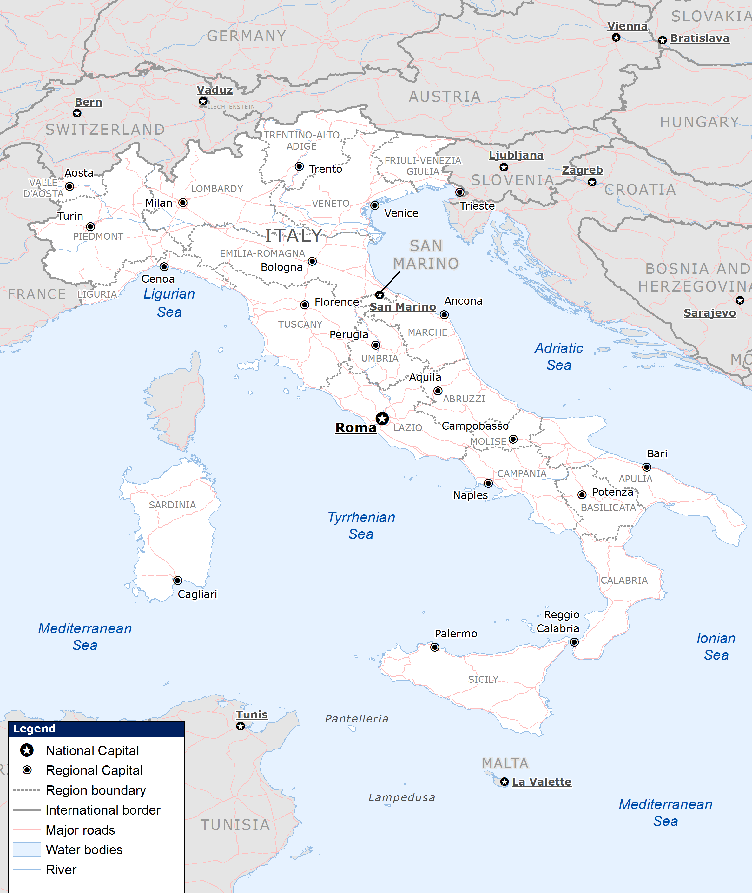
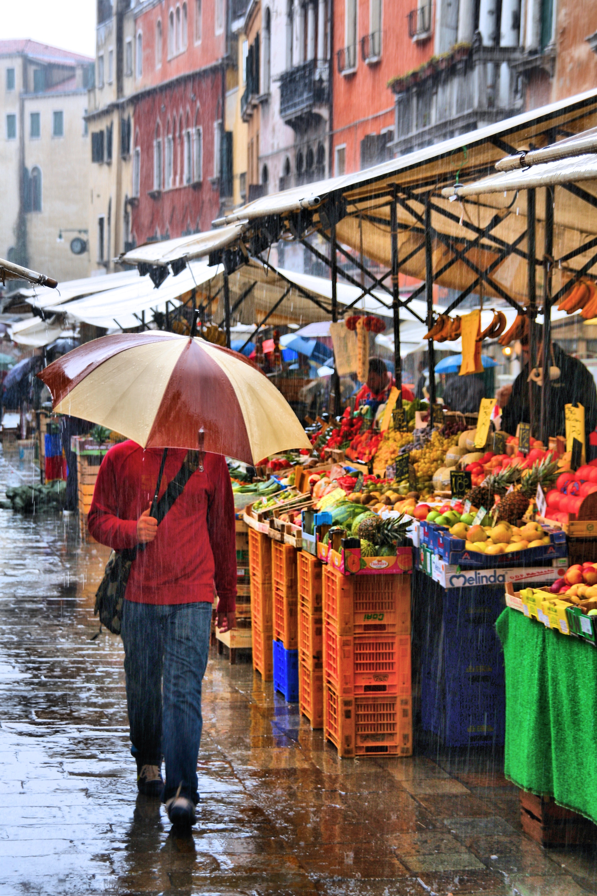
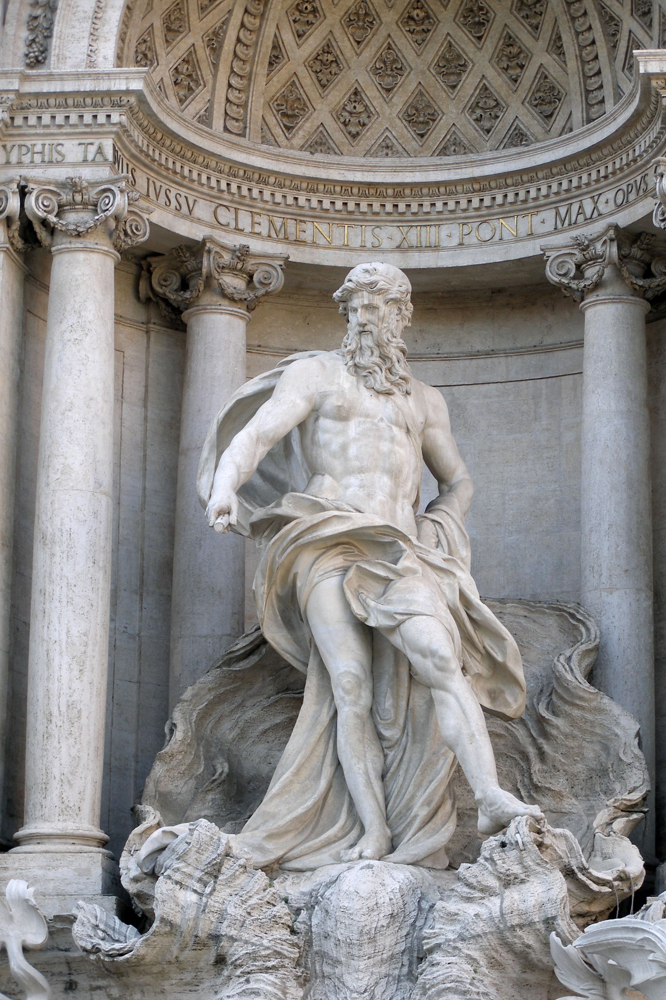

Where Is Florence?
Florence sits in the heart of Tuscany, making it a perfect base for exploring nearby cities and countryside. Click the map above to open Google Maps and zoom in.

Italy is a country filled with art, history, and tradition. Every region has its own flavor—from the pasta of Emilia-Romagna to the seafood of Sicily. Florence, located in central Tuscany, remains one of the most visited and inspiring cities in Europe. It’s not just a destination for art lovers; it’s also a living classroom for architecture, language, and culture.

Florence sits in the heart of Tuscany, making it a perfect base for exploring nearby cities and countryside. Click the map above to open Google Maps and zoom in.

Florence offers affordable food markets, student-friendly cafés, and lively streets full of culture. It’s the perfect environment for young travelers on a budget.

Start planning by exploring local landmarks, transportation options, and nearby Italian destinations. Use guides and sample itineraries to build the perfect trip.
Ready to go deeper? Use the Guide page for planning tips and must-see spots, and visit Explore for interactive features like a gallery, map, itinerary ideas, and helpful travel links.
Get detailed trip planning help, including must-see attractions, budget tips, and packing advice designed for young travelers.
Check out interactive content like a photo gallery, clickable maps, a sample itinerary, and curated travel resources.